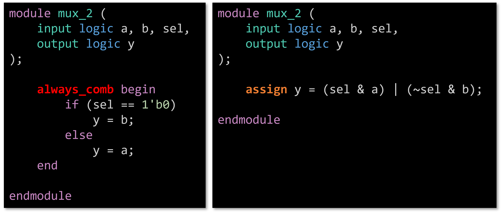
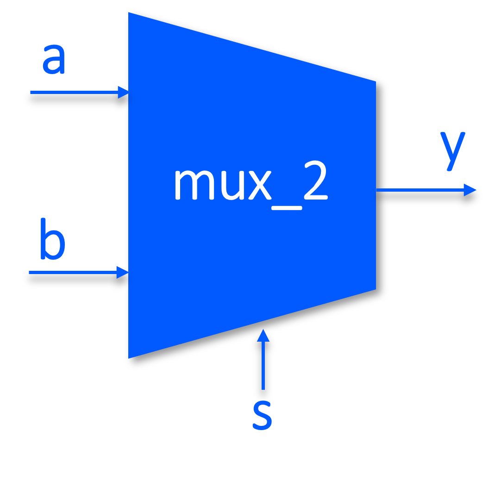
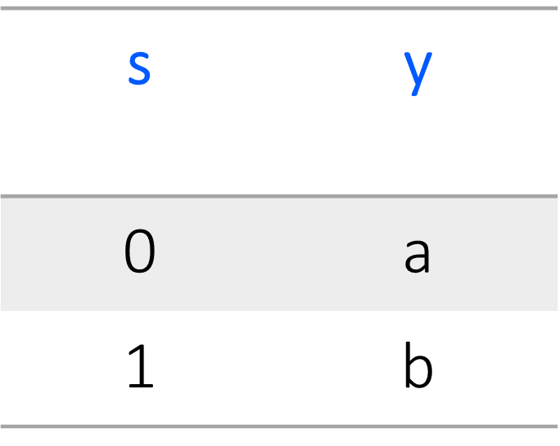
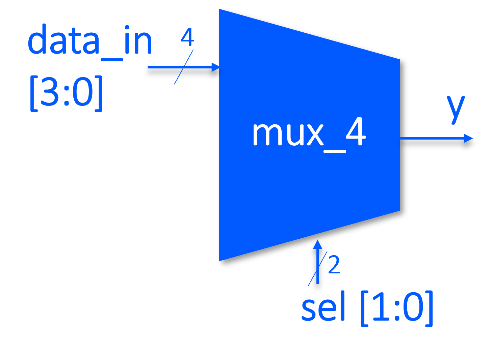
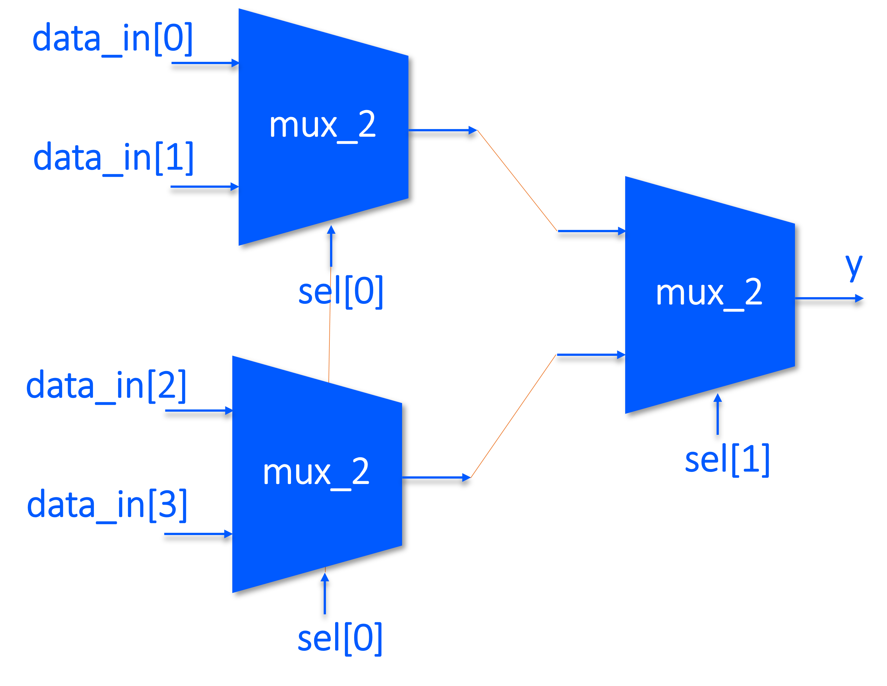
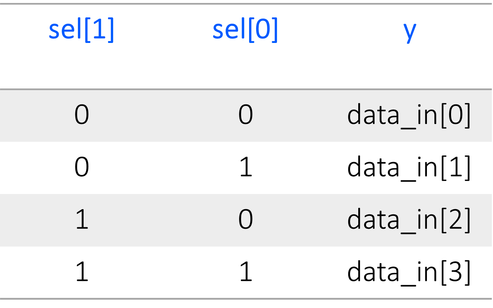
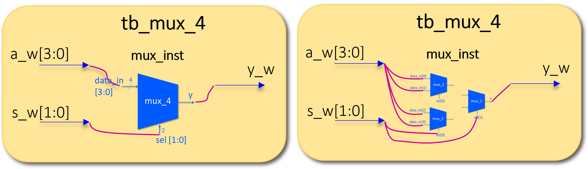
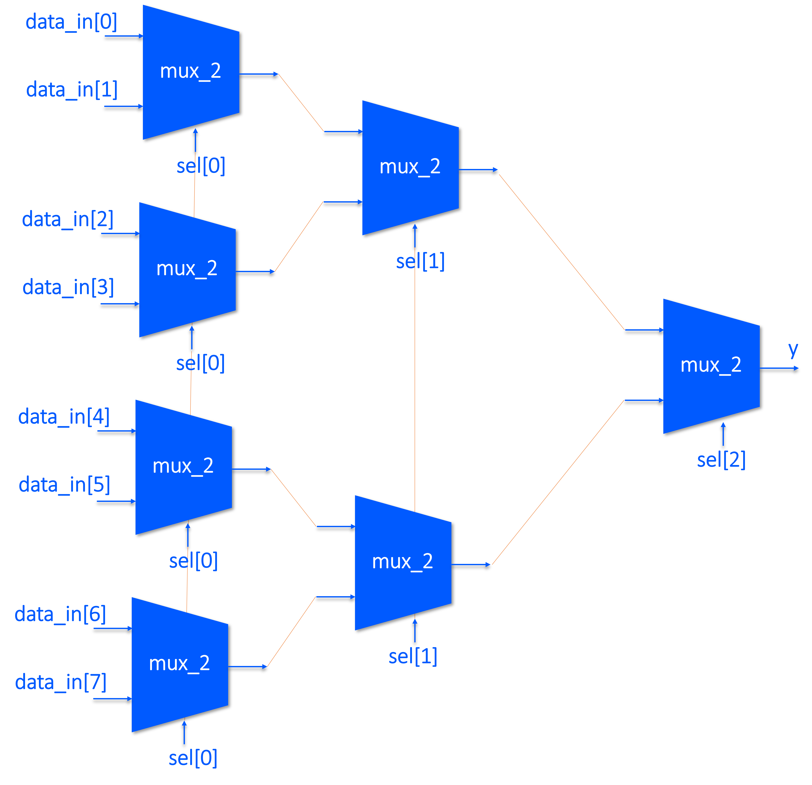
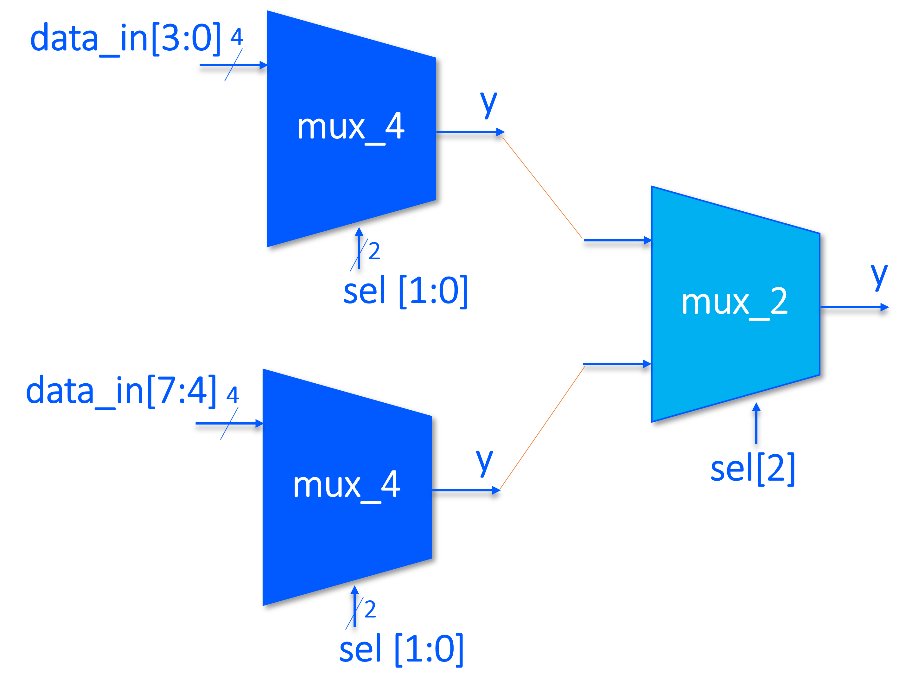

Combinational logic Combinational logic is a type of digital logic where the output is solely determined by the current inputs, without any memory of past inputs. This contrasts with sequential logic , where outputs can be influenced by previous states and inputs, essentially having memory. Combinational logic circuits perform operations based on Boolean algebra and are fundamental in creating circuits like adders, multiplexers, and arithmetic logic units (ALUs).
It refers to the type of logic circuits or expressions that result from continuous assignments or procedural blocks like always_comb. It represents a class of digital circuits built using basic logic gates (AND, OR, NOT, etc.) and does not involve any timing elements like flip-flops or latches
always_comb always_comb is a procedural block that is intended for combinational logic. It allows for more complex expressions and multiple assignments within the same block. It’s sensitive to all changes in the variables used within the block, ensuring that the logic is always up-to-date with the current inputs. It also infers a complete sensitivity list automatically, which means you don’t need to specify which signals it should react to.
Continuous assignment Continuous assignment with assign is used for simpler, direct assignments. It’s a declarative statement that continuously assigns a value to a wire based on an expression. It’s typically used for straightforward expressions and can only define one signal with one equation at a time.
It’s used to model combinational logic, which is logic that computes outputs solely based on the current inputs without any memory or storage elements. Continuous assignment statements are always active and reflect changes in the inputs immediately.

Fig.0 - always_comb VS continues assignment: combinational logic is generally used for more complex combinational logic where multiple assignments or more expressive logic is needed, while assign is used for simpler, direct wire assignments. Both result in combinational logic without storage elements, but always_comb can offer more expressiveness and is more explicit in its intent to represent combinational logic.
The first module uses a procedural block (always_comb), which is triggered whenever any of the inputs change. It uses an if statement to explicitly check the value of sel and assign y to either a or b accordingly. This is a more traditional style of writing hardware logic in Verilog, similar to writing software.
The second module uses a continuous assignment (assign) statement, which is a declarative way of defining the relationship between inputs and outputs. It uses bitwise operations to determine the value of y based on sel, a, and b. This style is more concise and often preferred for simple combinational logic as it can be easier to read and understand.
Bitwise VS Logical operators
The difference between assign y = (sel & a) | (~sel & b); and assign y = (sel && a) | (~sel && b); in Verilog lies in the use of bitwise operators (&, |) versus logical operators (&&, ||).
The bitwise operators (&, |) operate on each bit of the operands. In the expression assign y = (sel & a) | (~sel & b);, sel & a and ~sel & b perform bit-wise AND operations, and the results are combined using a bit-wise OR operation. This is the correct way to implement multiplexer logic in hardware description languages like Verilog1.
The logical operators (&&, ||) are used for logical comparisons and return a single bit result, which is either 1'b1 (true) or 1'b0 (false). In the expression assign y = (sel && a) | (~sel && b);, sel && a and ~sel && b perform logical AND operations, which are not suitable for bit-level hardware descriptions because they treat the entire operand as a single boolean entity. Logical operators are typically used for control flow decisions and single-bit comparisons.
In this exercise, you are required to implement a 2-input multiplexer (MUX) with the following input, output, and functionalities.

Fig.1 - 2-input Multiplexer (MUX).

Fig.2 - Truth Table of 2-input MUX.
Inputs:
The inputs to the MUX are 1 bit wide and are named "a", "b", and "sel" where "a" and "b" are data inputs and "sel" is the selection input.
Output:
The output of the MUX is a single bit and is named "y", assigning y = (sel & a) | (~sel & b).
Functionality:
A multiplexer outputs the value of either "a" or "b" based on the value of the selection input "sel". If "sel" is 0, the output is equal to "b"; if "sel" is 1, the output is equal to "a".
Testbench:
You need to create a module and define its name, outputs, and inputs. The module name can be mux_2 with "a", "b", and "sel" variables as its inputs and "y" as its output. Then you should also define the equation between output and input using the assign command. After creating a MUX, to test your module, you need to create a testbench module which instantiates the MUX inside it with a certain name. There you need to specify the input and output types (logic) and attach (wire) them to the instantiated MUX. After this, you need to give different values to input variables as well as some delay time (using #100 ns) to see the output changes over time within the input changes.
The multiplexer selects one of the 4 inputs based on the 2-bit selection signal sel and outputs it through y. The testbench applies different input combinations and observes the output y after a delay of 100 time units.
4-input multiplexer can be also implemented using 3 2-input multiplexers as implemented above as shown in figure 2.2. Try to implement the mux_4 block in both ways.

Fig.2.1 - 4-input Mux gate.

Fig.2.2 - 4-input Mux gate using a combination of 2-input muxes .

Fig.2.3 - Truth Table of 4-input Mux gate.

Fig.2.4 - Testbench structure (right: combination of mux_2s, left: single mux_4).
The multiplexer selects one of the 8 inputs based on the 3-bit selection signal sel and outputs it through y. The testbench applies different input combinations and observes the output y after a delay of 100 time units.
8-input multiplexer can be also implemented using 5 2-input multiplexers as shown in figure 3.2 or a combination of 2 4-input muxes together with a single 2-input mux as shown in figure 3.3. Try to implement the mux_4 block in both ways.
Fig.3.1 - 8-input Mux gate.

Fig.3.2 - 8-input Mux gate using a combination of 2-input muxes .

Fig.3.2 - 8-input Mux gate using a combination of 4-input muxes and a single 2-input mux.